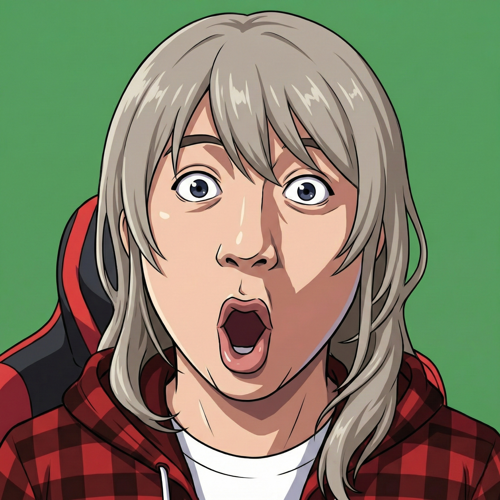

你怎么到这来了？
🔒 内部文件分发点
📦 shiorko.dpdns.org/static
⚙️ 这里是
shiorko.dpdns.org
的文件提供地址 —— 标准文件从这里发出。
⛔ 本站不直接提供任何网址 ⛔
🚷 你不应该到这来的！
🧭 如果你知道自己在干什么
file.shiorko.dpdns.org/file/
[ 文件名.扩展名 ]
⚠️ 必须加上文件拓展名，否则 404
📀 标准文件从这里发出
